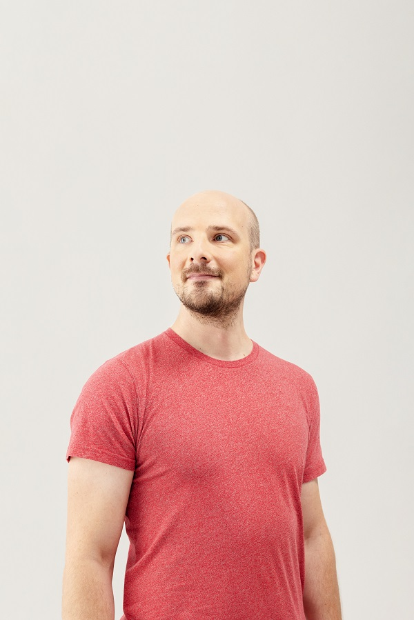
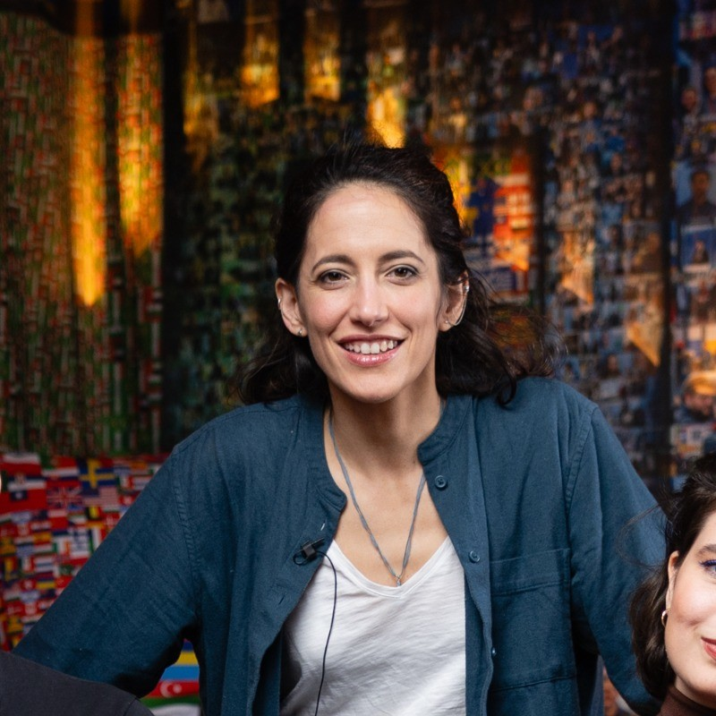

analyticsdev.net / 2027 / copenhagen
AnalyticsDev
A code-first evening event for technical digital analysts, implementation specialists, and data engineers.
registration is open
- date
- 17 March 2027
- venue
- Copenhagen · TBC
- early bird
- 1,250 DKK
- standard
- 1,900 DKK
- 3-day pass
- 14,000 DKK
// confirmed speakers

Simo Ahava Co-founder @Team Simmer
Fosca Fimiani Data Analyst @MultiMindsAnalytics, engineered
AnalyticsDev is an evening conference built for the people doing the work — implementation engineers, data engineers, and technical analysts who live in the detail of tagging, tracking, cloud infrastructure, and analytics engineering. We bring together practitioners to share real-world solutions, not strategy decks.
Expect hands-on lightning talks, expert keynotes, and curated peer discussions focused on practical problem-solving and advanced implementation techniques. You will walk away with actionable insights, new technical peers, and a fresh perspective on what is possible when analytics meets engineering.
Lightning Talks
Ten minutes, one problem, one solution. Speakers share what they built, what broke, and what shipped — no filler.
Expert Keynotes
Invited practitioners go deep on a specific technical domain — architecture decisions, implementation trade-offs, and hard-won lessons from the field.
Peer Breakout Circles
Small groups, a shared implementation challenge, and a facilitator. The conversations that don't happen in Slack threads.
Food & Drinks
Sandwiches, soft drinks, beer, and wine with the people who actually built the things you have been reading about. No agenda, no elevator pitches.
Built for those in the detail
AnalyticsDev draws practitioners who configure, instrument, and maintain the systems that make data collection work. If your work lives at the implementation layer — not just reading the reports, but building and debugging what produces them — these talks are written for you.
If any of these are part of your day-to-day, you belong here:
Speakers
Speakers are announced on a rolling basis. More to follow.
Simo Ahava
Co-founder · Team Simmer
Bio & Session
One of the world's foremost experts in Google Tag Manager and web analytics implementation. Founder of Team Simmer, an online learning platform for digital analytics and technical marketers.
Session
Session to be confirmed. Simo's work spans custom GTM templates, consent-aware measurement, and browser API integrations — expect depth on whatever he has been building.
Caroline Vidal
Senior Martech Engineer · DFDS
Bio & Session
Bio to be confirmed.
Session
Session to be confirmed.
Rune Andersen
Founder · Event Watcher
Bio & Session
Bio to be confirmed.
Session
Session to be confirmed.
Ayla Prinz
Co-founder · elbwalker
Bio & Session
Bio to be confirmed.
Session
Session to be confirmed.
Artem Korneev
Lead Technical Web Analyst · OMMAX
Bio & Session
Bio to be confirmed.
Session
Session to be confirmed.
Fosca Fimiani
Data Analyst · MultiMinds
Bio & Session
Bio to be confirmed.
Session
Session to be confirmed.
Nicolas Hinternesch
Global VP Sales Engineering · Piano
Bio & Session
Bio to be confirmed.
Session
Session to be confirmed.
More speakers coming
Announcements rolling out
Programme Directors
Gunnar Griese & Steen Rasmussen
Programme
17 March 2027 · Copenhagen · venue to be confirmed
The full programme will be announced closer to the event. Follow updates on BrandLeadership Community →